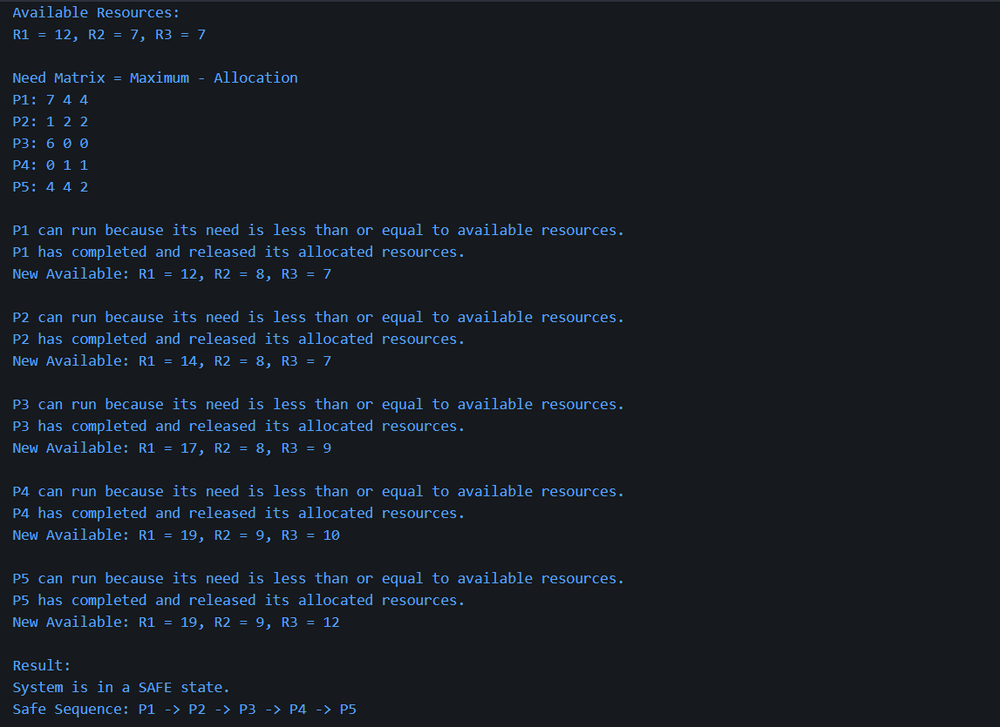
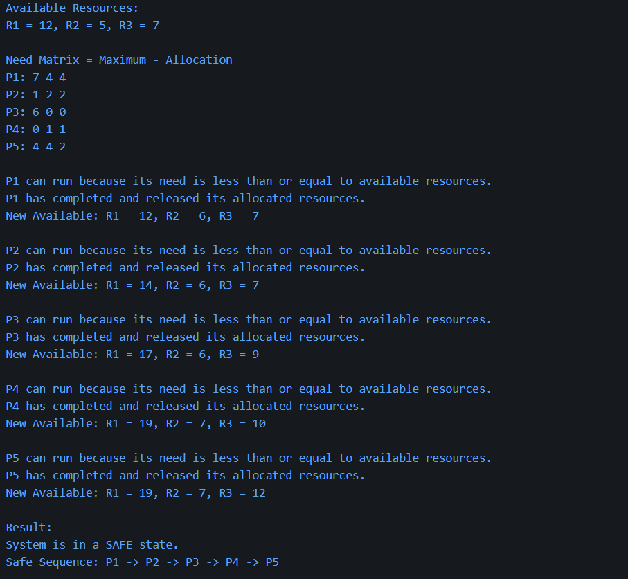
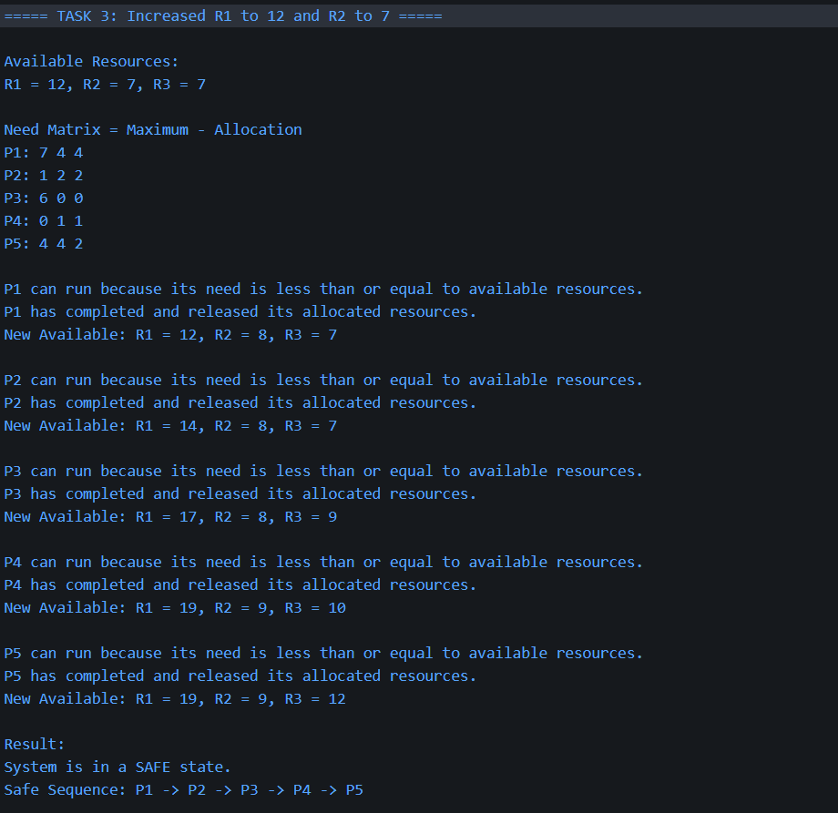
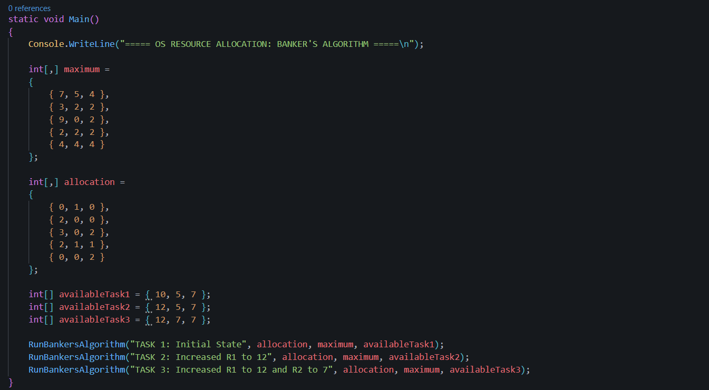

OS Resource Allocation Lab
Introduction
This lab focused on resource allocation in operating systems and how deadlock can be avoided using Banker's Algorithm. Resource allocation is important because processes often need access to limited resources such as memory, files, CPU time and input/output devices.
Banker's Algorithm checks whether a system is in a safe or unsafe state. A safe state means there is at least one order in which all processes can finish without causing deadlock.
Initial Data
The system contains five processes and three resource types: R1, R2 and R3. The maximum demand matrix used in the lab is shown below.
| Process | R1 | R2 | R3 |
|---|---|---|---|
| P1 | 7 | 5 | 4 |
| P2 | 3 | 2 | 2 |
| P3 | 9 | 0 | 2 |
| P4 | 2 | 2 | 2 |
| P5 | 4 | 4 | 4 |
The need matrix is calculated using the formula:
Need = Maximum - Allocation
Task 1: Manual Analysis with Banker's Algorithm
For the first task, I used the available resource values R1 = 10, R2 = 5 and R3 = 7. I calculated the need matrix and then checked whether each process could run using the available resources.
If a process can run, it completes and releases its allocated resources back into the available resource pool. This increases the available resources and may allow other processes to run.
The system was found to be in a safe state because all processes were able to complete.

Task 2: Increasing Resource R1
In the second task, resource R1 was increased from 10 to 12 while R2 and R3 remained the same. The new available resources were R1 = 12, R2 = 5 and R3 = 7.
Increasing R1 gave the system more flexibility because processes requiring R1 were more likely to be able to run. I repeated Banker's Algorithm using the new available resource values.
The system remained in a safe state because every process could still complete and release its resources.

Task 3: Further Increase in Resources
In the third task, R2 was also increased. The new available resources became R1 = 12, R2 = 7 and R3 = 7.
Increasing resources improves the chance of the system being safe because more processes can have their needs satisfied. This can reduce waiting time and improve system performance.
The system was again found to be safe. The extra R2 resources made it easier for the algorithm to find a safe sequence.

Task 4: C# Implementation
I implemented Banker's Algorithm in C#. The program calculates the need matrix, checks whether each process can safely run, updates the available resources when a process completes, and outputs whether the system is safe.
The program repeats the analysis for the initial state, the increased R1 state, and the increased R1 and R2 state.

Deadlock and Safe States
Deadlock can happen when processes are waiting for resources held by each other, meaning none of the processes can continue. Banker's Algorithm helps avoid this by checking whether granting resources would leave the system in a safe state.
A safe state does not mean deadlock is impossible forever, but it means there is currently at least one safe order in which all processes can complete. An unsafe state means the system may move towards deadlock if resources are allocated badly.
Reflection
This lab helped me understand how operating systems manage limited resources and avoid deadlock. I learned how to calculate the need matrix, compare process needs against available resources, and identify a safe sequence.
This is useful in industry because servers, databases, cloud platforms and operating systems must manage limited resources efficiently. Deadlock prevention and avoidance help systems remain reliable, stable and responsive.